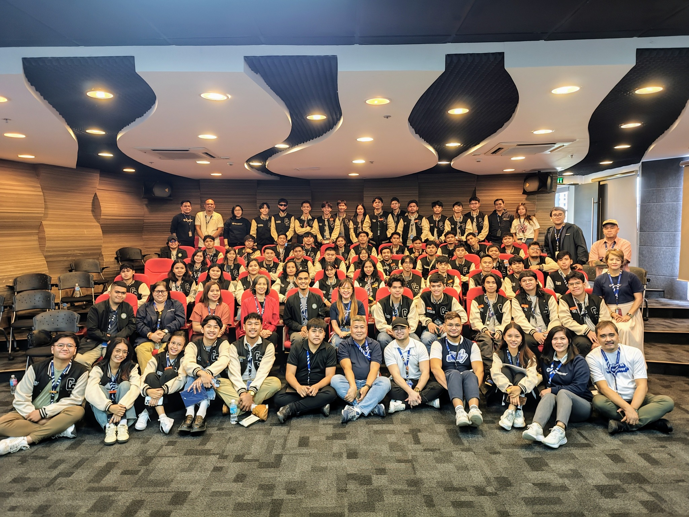
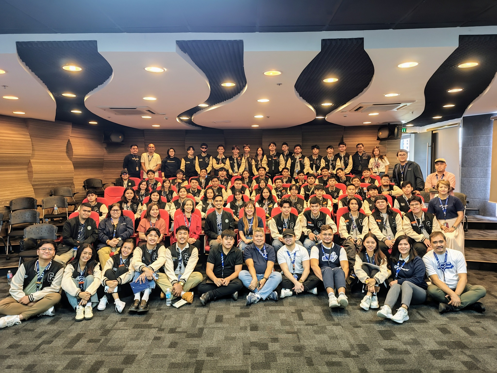

Foundever PH
Technopoint Building, Pasig City
 

We visited Foundever PH in Pasig City as part of our school’s mission to give us real-world experience in the tech and IT-BPM industry.
The Foundever team welcomed us warmly and gave us a tour of their impressive facility. We learned how they use technology like AI, cloud computing, and data analytics to help big brands with customer service. We also had insightful discussions with their operations and IT teams about digital transformation, data privacy, agile methods, and cybersecurity.
We met Ms. Zoe Diaz De Rivera from IBPAP, who gave us an overview of the IT-BPM industry in the Philippines. She talked about the industry’s growth, the variety of jobs available, and the importance of skills like communication, critical thinking, and adaptability.
One key takeaway was how broad the opportunities are in IT-BPM. It’s not just about call centers—it’s about innovation and technology. The visit made us realize the importance of building a strong digital portfolio and being open to continuous learning.
We ended the day with a group photo session and tokens of appreciation. This experience truly opened our eyes to the possibilities in tech, and I’m grateful our school provides opportunities to connect classroom learning with real-world industry practice.